Table of contents
2D SAT collision detection
Introduction
Hi! This is a pretty lengthy article about AABB and SAT collision detection. I tried to explain these concepts as well as I could from a programming point of view, but there may be slight mistakes. Reading this does have some prerequisites however, such as knowing a bit of linear algebra, vector math and what a coordinate system is.
The principle
Before understanding the Separating Axis Theorem, it would be very helpful to first understand the simpler cousin of the algorithm, AABB (Axis-Aligned Bounding Box), since they both work on the same base principle. Once you understand AABB collision detection, SAT becomes much simpler. If you already know how AABB detection works, feel free to skip the next section.
AABB Collision algorithm
AABB is a simple collision detection algorithm that only works when all objects are aligned on the world axes (ie. no rotation of the objects or the axes).
The algorithm itself is simple to understand, all you have to do is compare the left-most and right-most vertices of each object on the x axis, and the top and bottom vertices on the y axis. If the ranges provided by these vertices intersect on both axes, you have collision, otherwise, you do not.
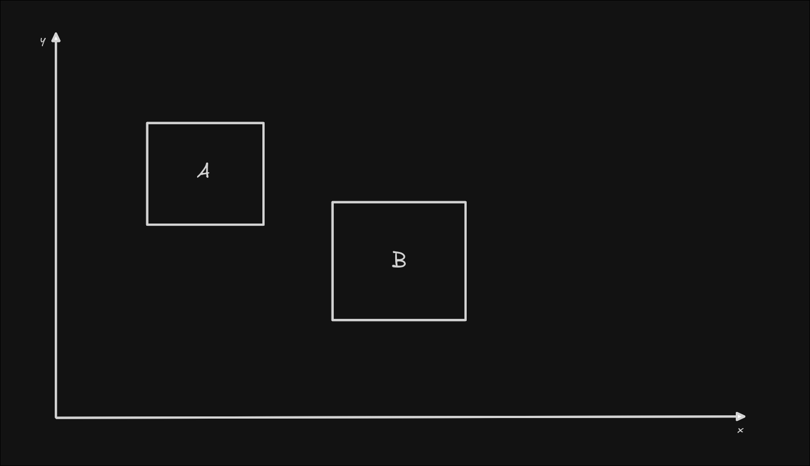
As you can easily see, there is no collision between the two rectangles in this case. On a computer program, let's check the y axis first, according to the logic from above.
To do this we will need to first find the highest and lowest points of both objects. Do this by checking the y position of all points. Once you have found the 2 points for each object, we should look at their projections onto the y axis (you don't need to project anything in code for the AABB algorithm, I'm just using this illustration to show what happens).
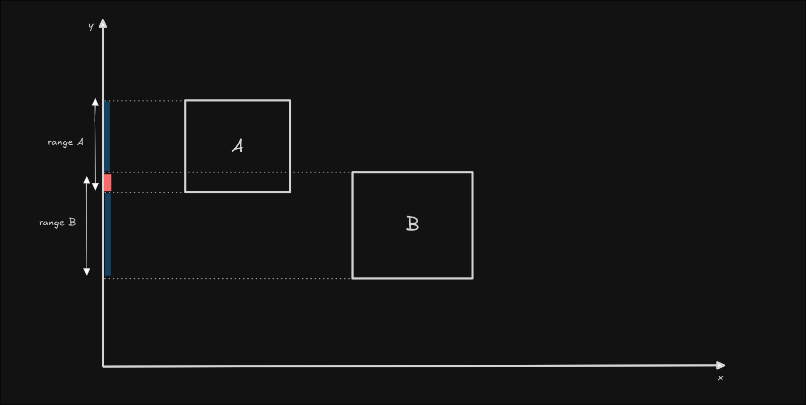
As you can see, the two ranges intersect. That means that we have collision on the y axis. Now we need to check the x axis as well, as we can only be sure we have no collision when all axes have been checked. If we had no collision on the y axis, that would have meant that the algorithm is done and the two objects do not touch each other, so we could have exited early, to avoid any additional calculations. This early exit strategy will also later apply to the SAT algorithm.
Now, onto the x axis. Do the same as before regarding the point selection, only this time take the left-most and right-most points of each object. If we project the points onto the x axis, this is what the projection would look like:
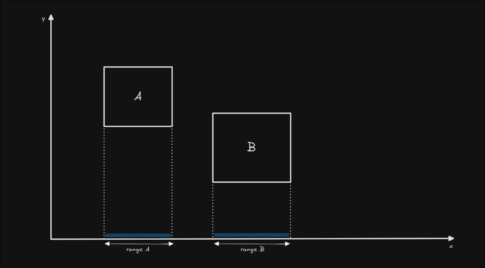
We can see that the ranges of the 2 rectangles do not touch. That means that the job is done, and there is no collision between the two objects.
Remember, if we can find a gap between the two objects, it means we have no collision.
Projecting the vectors is something that we will cover in the SAT section of this article. Luckily, the code implementation doesn't include any projection for AABB collision detection, so it is actually simpler than the illustration. We only need to compare the x and y components of the edge points, since their projected points would have the same coordinates along the axis anyways.
This is the whole AABB algorithm explained, and will serve as a solid base for understanding the SAT algorithm.
SAT Collision algorithm
The Separating Axis Theorem states that if two convex shapes do not overlap, there must exist a line (axis) that separates them. You could even see this phenomenon in our simple rectangle example, where the y axis was (one of) the separating axes between the two objects.
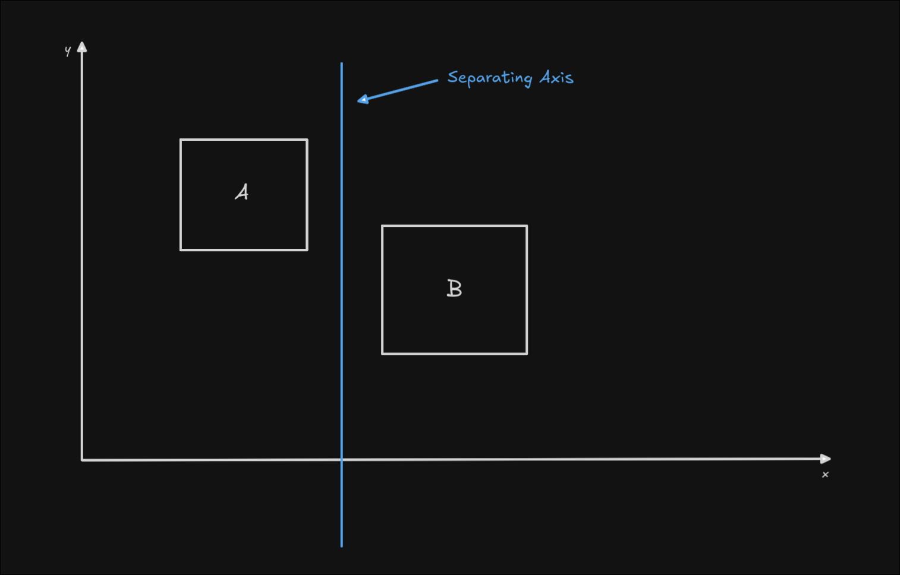
You may have noticed that I said the y axis was only one of the separating axes. That's because if the objects are not intersecting, there can be an infinite number of separating axes. So, how do we find one axis that separates the objects, out of an infinite number of possibilities?
To answer this, let's first change the illustration to a proper example where SAT would be useful. As I previously wrote, AABB detection doesn't help us anymore if the objects are rotated. Let's rotate them, and try the AABB algorithm again!
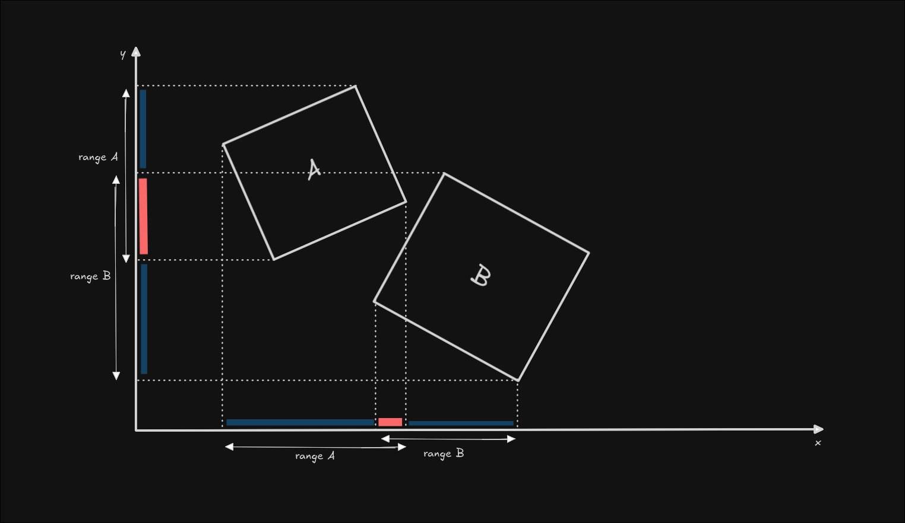
This example looks a little bit busy, so let me explain what's going on.
We have slightly rotated both objects, and moved them closer together to show how AABB fails on rotated objects. Then, we are applying the same principle to the objects, we are projecting the minimum and maximum points onto the axis to see if they intersect. This time though, they intersect on both the x axis and the y axis, even though we can see that the objects don't actually touch.
To get around this limitation, we need to efficiently find an axis that separates both of these shapes. Such an axis can be found by treating the normal vectors of each edge as a separate axis, and using AABB principle for each one of these axes.
I will switch to triangles now instead of rectangles, to have as few edges (axes) as possible, and illustrate the example more clearly, but please note, this algorithm will work with any polygon that is convex. I will illustrate later how this fails with concave shapes.
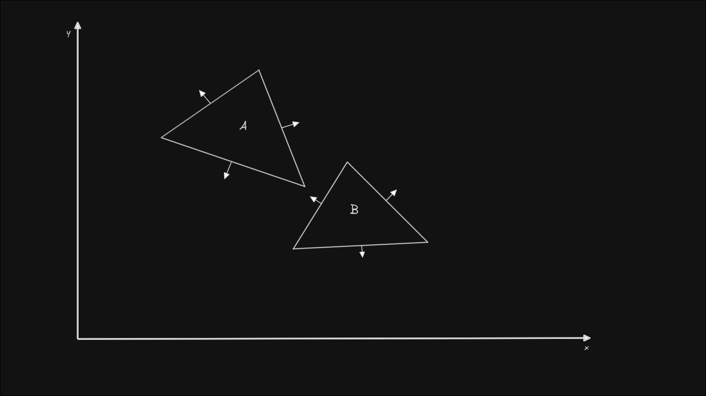
I've also taken the liberty of drawing the normals for each edge (the little arrows perpendicular to each edge). A normal is just a vector that is perpendicular to another vector, in this case perpendicular to the triangle edges.
These normals are now the axes that we need to project the minimum and maximum vertices on, and check for overlapping ranges. If any of the axes has a gap between the shapes, that means that we have found our separating axis, and we can exit early knowing that there is no collision.
This algorithm is slightly more involved than AABB, since we now need to calculate the vector of each edge, then calculate the normal of the edge, and then project the vertices onto the normal to find the shape's minimum and maximum points. Let's do this together, step by step.
First, let's take an edge at random from the B shape. To compute the edge vector, we simply need to subtract 2 adjacent vectors, in our case, v1 and v2.
edge = v1 - v2
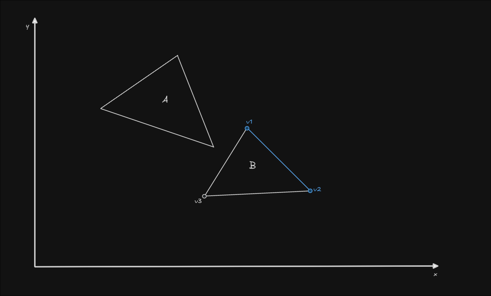
Now that we have the edge vector, we need to find the normal vector for that edge. This can simply be done by inverting one of the components of the vector, and switching the place of the components.
normal({ x, y }) == { y, -x }
or
normal({ x, y }) == { -y, x }
This operation will give us one of the normals of the edge (the edge has 2 normals, two vectors perpendicular to it with an opposite direction. We don't care which one we compute, since the projection of the vector will be the same).
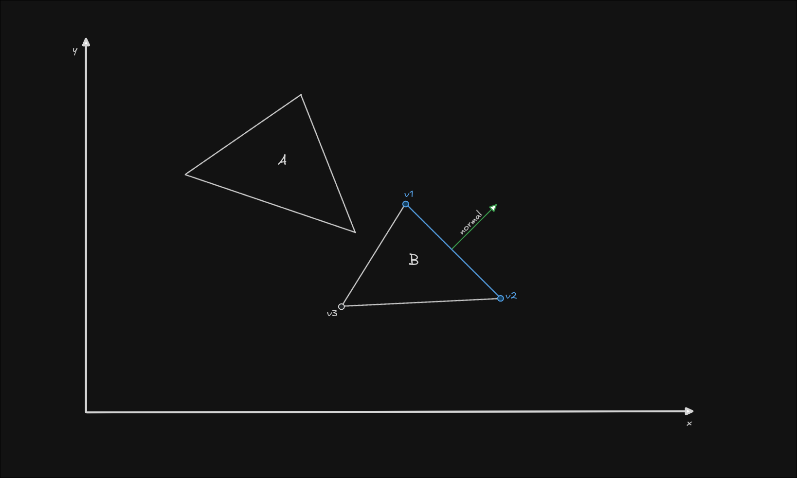
The third step we need to do is project the vertices. You can directly do this in code, but first I want to pull the normal apart from the shape so we can clearly see what's going on in the illustration.
We can freely move the normal and increase its length for the sake of visualizing it more clearly. In code, you will need to keep your normal vector normalized (unit length). As long as we don't rotate the normal axis, the principle is the same.
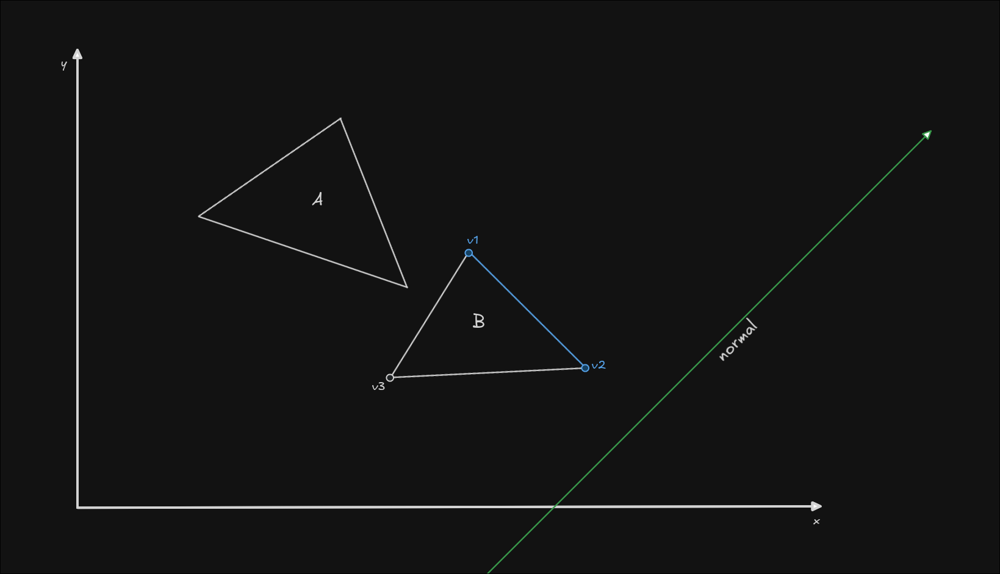
Now we can visualize the projections more clearly. Let's project all the vertices of the B triangle onto our normal. Imagine a projection as drawing a perpendicular line, from a point (your vertex), onto a vector (your normal), and computing the length to the projected point along the normal.
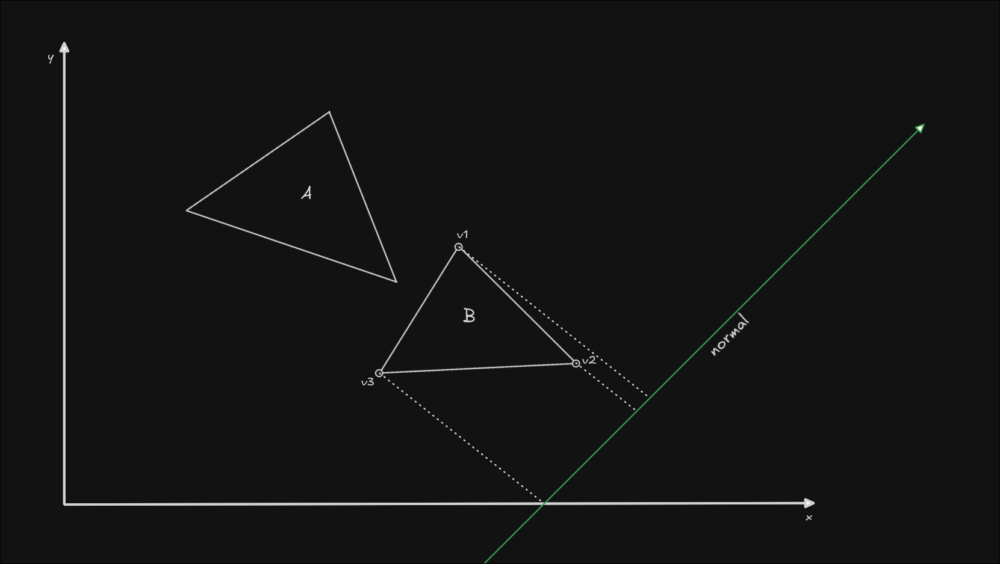
Here we can see that the minimum point on the axis is the projection of v3, and the maximum point along the axis is the projection of v1. In code, we can find this out by computing the projection length of each point. The projection length is the result of the dot product between the vertex and the normal axis.
At this point the normal should also be normalized (unit length).
normal = normalize(normal)
projection_length = dot(vertex, normal)
Please note that the dot product returns a scalar value (this could be a float or int in your coordinate system, it's simply a length), not a vector.
Now that we know the minimum and maximum points of our projected shapes onto the normal, we have a range of values that the shape occupies on our axis.
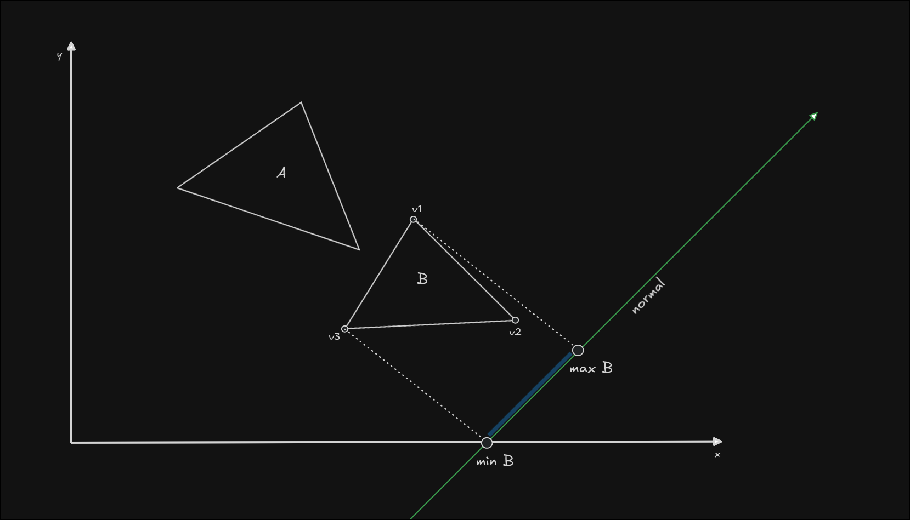
Let's run the same logic on the A triangle and see where we stand with the projections.
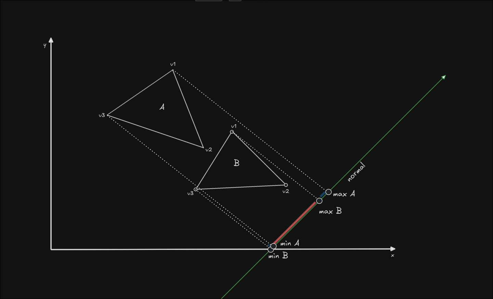
As you can see, we have detected overlapping ranges on this normal, so this normal is not a separating axis! We need to run the same logic on all the normals in our shapes, until we find one that has no overlap between the projections, or until we run out of normals.
Let's go ahead and check another normal: the normal on the edge formed by the vertices v1 and v3. This time I chose a normal that is a separating axis.
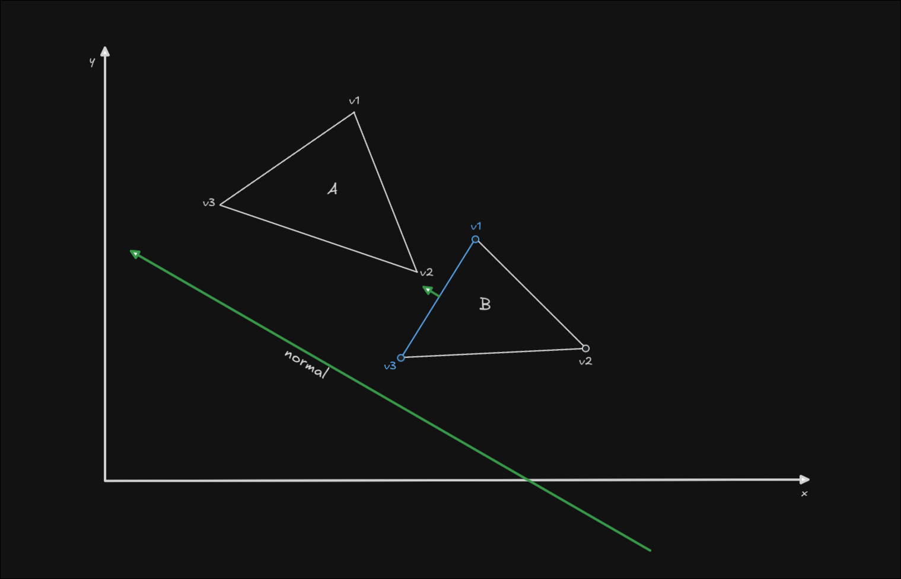
Like before, I extracted the normal below the illustration and increased its length so we can see the projections better.
Now let's project the minimum and maximum points of each shape, and see if the ranges intersect:
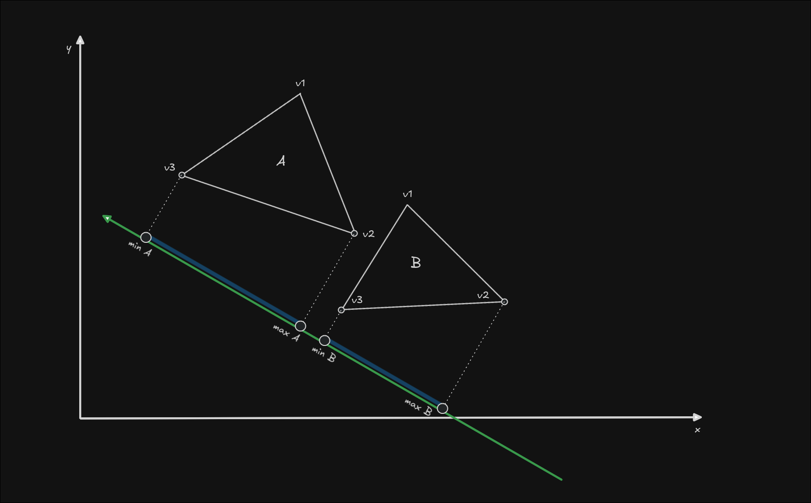
The two ranges do not intersect, and that means we have NO collision between the two objects. We can exit our algorithm early and avoid any further computation. If we had detected collision on this axis as well, we would have needed to keep checking all other normals from triangle B, and then check all the normals from triangle A as well.
This is the basis of the SAT algorithm done for convex to convex polygon collision detection. If you have slightly more complex needs than this, or want some ideas about how you could optimize this algorithm, you might find something useful in the chapter below.
Additional shapes
Circle to Circle
Circle to circle collision detection doesn't involve the SAT algorithm at all, it's just a matter of checking if the sum of the radii is less than the distance between the two centers of the circles.
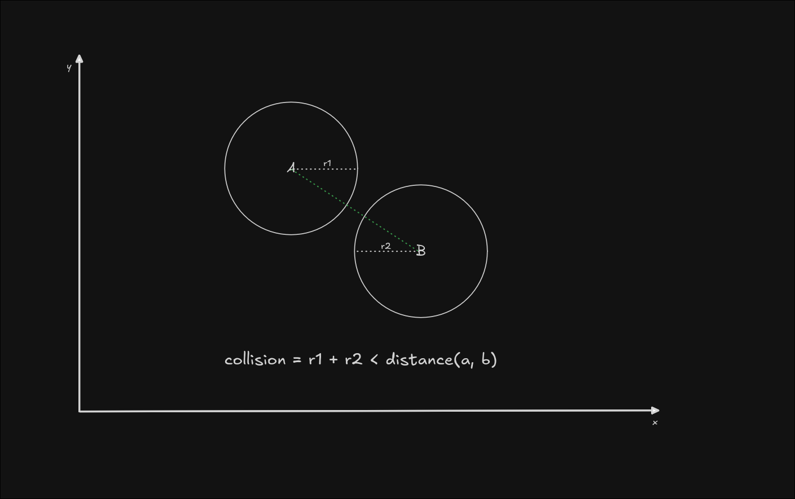
Circle to Polygon
Circle to polygon however, does require us to use the concepts previously learned, but we need to account for the fact that circles have no edges. As such, we can only compute the normals of the triangle in this case, and project both shapes onto those normals. Let's see how that looks like:
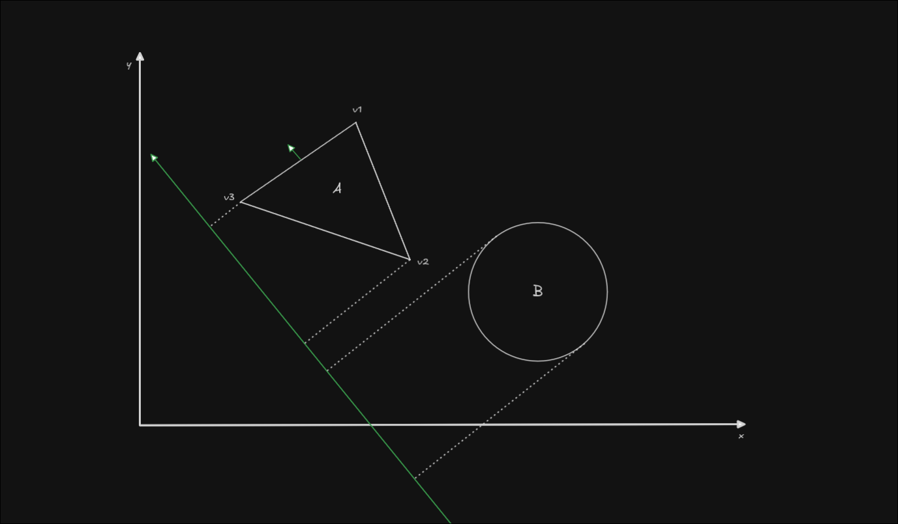
After we have the projections, the algorithm follows as before. Now the only question is, how do we project the circle? Let's get rid of the triangle for a second.
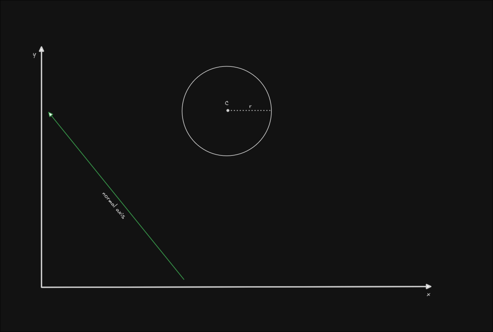
All the data you need for the projection is the position of the circle's center (let's call this C), and the radius (called r). To get the minimum and maximum points of the circle, we need to compute 2 different vectors, for the furthest parts of the circle along the axis. In fact, we can compute a single vector and invert it, since the circle "edges" will always be in opposite directions and have the same length (the length of the radius).
To get a vector along the axis, we can normalize the normal axis (set its length to 1) in order to get a unit vector with the axis' direction, and then multiply it by the radius to get a vector of the same length as the radius of the circle. Then we need to add the position of the circle (its center) to this vector. The result will be the furthest point on the circle's diameter, in the direction of our axis. Let's call this P1
P1 = center + (normalize(normal_axis) * radius)
To get the opposite point we can just subtract the radius vector from the center of the circle:
P2 = center - (normalize(normal_axis) * radius)
This is where the points of our calculation will sit on the shape:
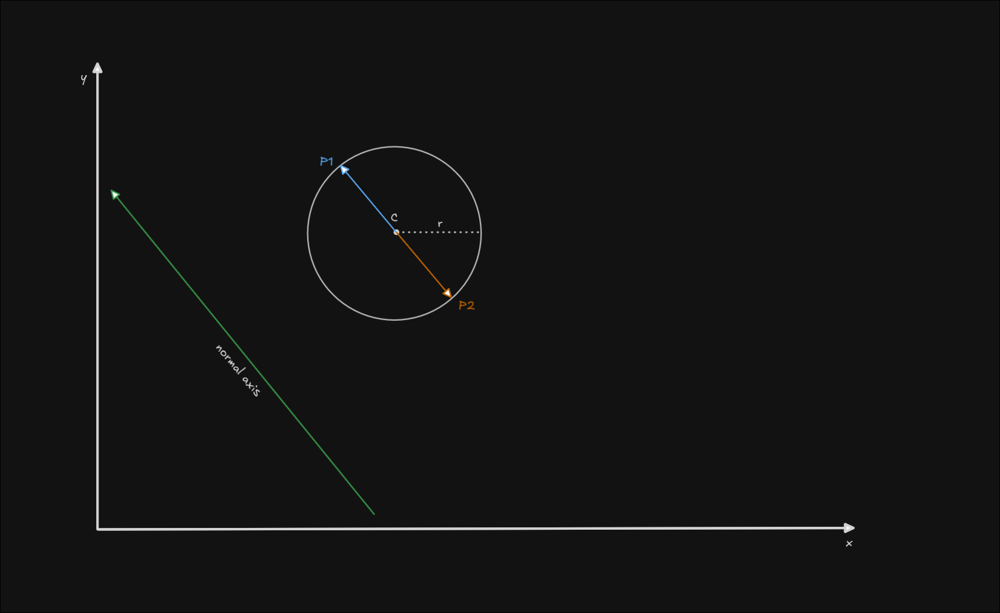
The rest of the algorithm follows as before, we just project these points onto the axis as if they were vertices of a polygon, and check if there is any collision on the axis. We do this for each axis of the polygon until we find no collision or the normals of the polygon are exhausted.
Why concave polygons don't work (and a workaround)
Simply put, there are situations in which the objects don't collide, but there is also no axis that separates the two objects.
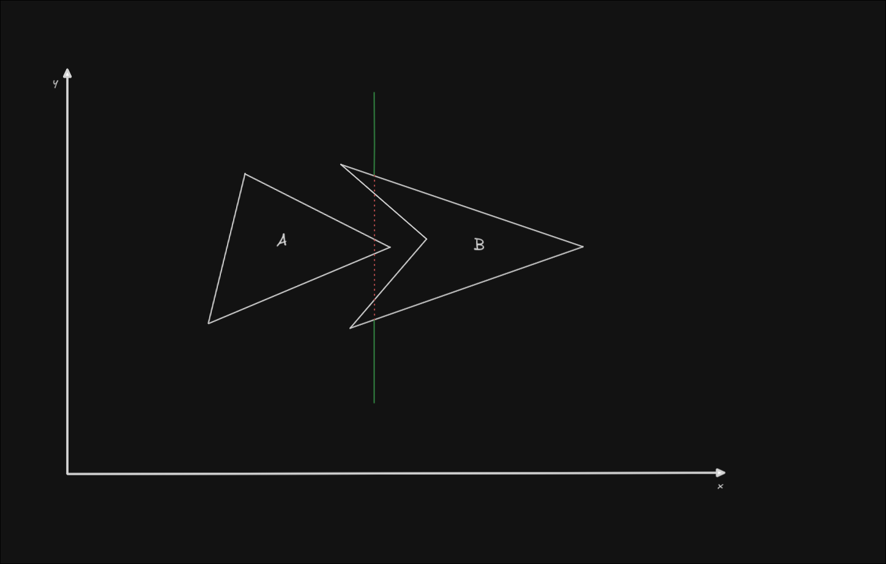
There is a possible workaround for this issue, which is to separate the concave polygon into multiple convex polygons, and check their collisions separately. This can however get pretty expensive to compute if you have complex concave shapes.
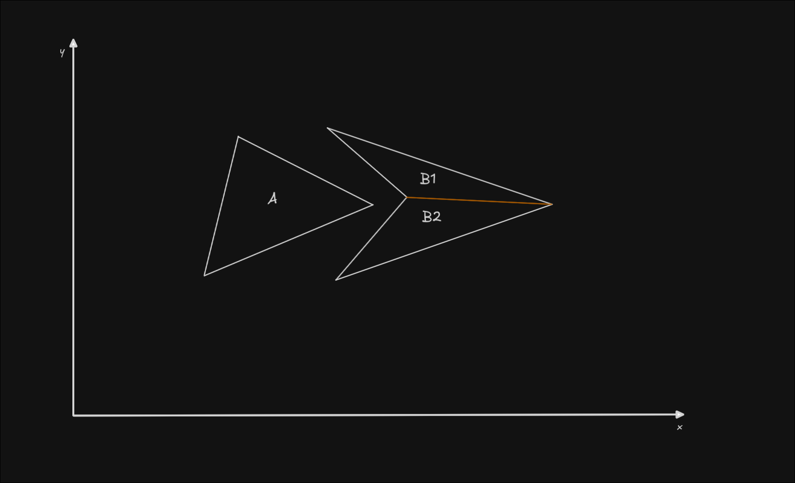
If neither B1, nor B2 collide with A, there is no collision between the convex polygon and the concave polygon.
Explaining how to separate a concave polygon into convex polygons is beyond the scope of this article. If you need it, you should look into convex decomposition.
Some possible optimizations
- For any shape with parallel edges, such as rectangles and rhombi, you can skip checking half of the normals, since half of them will just be pointing in the opposite direction from the others, but this algorithm doesn't care about the direction of the axes.
- If you need to check the collision between the same exact shape type, you can skip getting the normals of one of the shapes completely, you don't need to compute the projections on the same axes twice.
- Depending on your use-case, you may choose to only check the collision of shapes that are close to each other, and discard the shapes that sit at large distances outright.
- This algorithm is very easy to run on multiple threads with a lot of shapes, since you just need to generate pairs of shapes and split them up among the available threads.
Additional resources
If you need more visual examples to understand the algorithm, you may have better luck with these youtube videos:
- How 2D Game Collision Works (Separating Axis Theorem)
- Collision Detection with SAT (Math for Game Developers)
For 3D applications you may prefer to use the GJK (Gilbert-Johnson-Keerthi) algorithm since it is more efficient with a wider variety of convex shapes, although it is more involved and complex than SAT. To learn this I recommend Reductible's video on the subject: A Strange But Elegant Approach to a Surprisingly Hard Problem (GJK Algorithm).
You may also choose to adapt the SAT algorithm to work with 3D, in which case you will need to compute the face normals, instead of the edge normals as we did for 2D.
For more complex use-cases, such as physics interactions, predictive collision detection, ragdolls, I strongly recommend checking any of Box2D's documentation or publications
Thanks for reading!
If this article helped you, feel free to share it with others! If you have any feedback, or something wasn't clear enough, I'd love to hear about it, so please send me an email at cristicismas@pm.me.